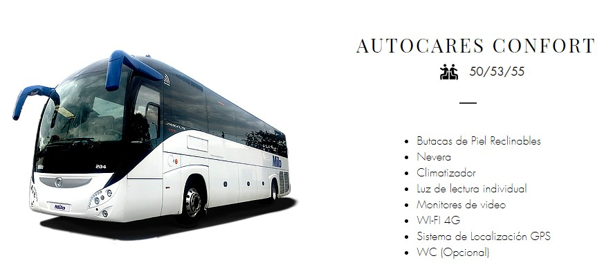
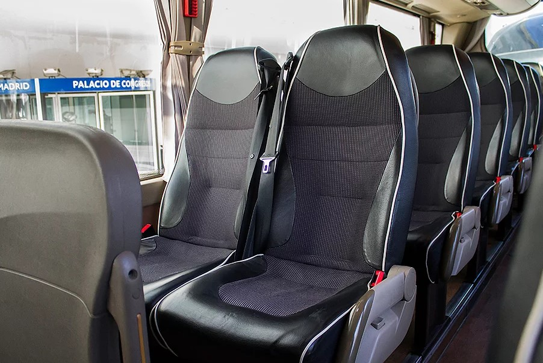

MUNDO MEETING - MADRID
Miguel Larguia
10 al 14 de Septiembre, 2020
Introduccón
Siguiendo su petición, a continuación le presentamos:
Dos opciones de cena más espectáculo flamenco con capacidad para todo el grupo
Restaurantes de comida tradicional situados en el centro de la ciudad, en los que podrá disfrutar de comida de alta calidad cocinada “según las recetas de nuestros abuelos”
Restaurantes vanguardistas, jóvenes…con una atmósfera especial, pero sin olvidar nunca la buena comida.
Excursiones fuera de Madrid incluyendo almuerzo, en las que podrán disfrutar de la historia y la gastronomía de la zona.
Actividades de medio dia que se realizan en la ciudad de Madrid y nos explican parte de su “alma”
Precio de traslados en bus
Cena y Flamenco
Tablao Villa Rosa
Situado en la céntrica Plaza de Santa Ana encontramos el Tablao Villa Rosa, el más antiguo de Madrid. Fue inagurado en 1911 y tras varias transformaciones, en 1919 lograron desarrollar un concepto nuevo para el momento: restaurante con espectáculo en Madrid con alma flamenca.

En Villa Rosa podemos encontrar una variada propuesta gastronómica ofreciendo los platos más representativos de la cocina española y especialmente la andaluza.
La Estructura del teatro flamenco se articula bajo un entramado de columnas inspidados en la Alhambra de Granada. El ambiente se envuelve bajo las escenas taurinas y flamencas de azulejos que se conservan desde la inauguración del tablao.


A demás de todo lo explicado anteriormente, es perfecto para nuestros invitados ya que su capacidad máxima son 250 comensales.
PRECIOS:
Menu básico de tres platos, incluyendo 1 bebida, desde(incluyendo el espectáculo): 66,50€ IVA inc.
Barra libre de cerveza, vino y sangría 2 horas (durante la cena): 16,50€ IVA inc
Café o te: 2,5€ IVA inc
La Posta Real
La Posta Real está situado a las afueras de la ciudad, a unos 25km del Hotel Melia Castilla.
El edificio en el que se encuentra fue contruido en el s.XVII y hoy en dia ofrece diferentes espacios para diferentes tamaños de grupo, así como un restuarante abierto diariamente.
Tanto para el restaurante como para eventos como el nuestro, la Posta Real tiene cocina propia y elabora menus de calidad elaborados con productos de proximidad.
Para nuestro grupo proponemos el Pabellón de los Espejos
Este Pabellon tiene capacidad para 250 personas y se puede montar un escenario para poder gozar del espectáculo flamenco.


PRECIOS:
Menu básico de tres platos, incluyendo bebida (1 botella de vino cada 3 pax, agua y café) desde: 77,50€ IVA inc
Espectáculo flamenco con 6 músicos, escenario y audiovisuales necesarios: 4.300€ IVA inc
Restaurantes Tradicionales
Casa Gallega
Grupos desde 10 hasta 100 personas.
PRECIOS:
Menu básico compuesto de entrantes a compartir, plato principal a elegir entre carne y pescado, postre casero, incluyendo bebida (1 botella de vino cada 3 pax, agua y café) desde: 62,50€ IVA inc
OPulpo
Grupos de 10 hasta 35 personas.
PRECIOS:
Menu básico compuesto de entrantes a compartir, plato principal a elegir entre carne y pescado, postre casero, incluyendo bebida (1 botella de vino cada 3 pax, agua y café) desde: 44€ IVA inc
Casa Alberto
Grupos de 5 a 30 personas
PRECIOS:
Menu básico compuesto de entrantes a compartir, plato principal a elegir entre carne y pescado, postre casero, incluyendo bebida (1 botella de vino cada 2 pax, agua y café) desde: 44€ IVA inc
Meson Txistu
Grupos de 10 a 250 pax
El mesón tiene salones privados de difererentes tamaños, desde 46 a 150 pax en un solo salón.
PRECIOS:
- Menu básico compuesto de entrantes a compartir, plato principal a elegir entre carne y pescado, postre casero, incluyendo bebida (1 botella de vino cada 2 pax, agua y café) desde: 75,50€ IVA inc
La Barraca
Grupos de 10 a 90 pax
PRECIOS:
- Menu básico compuesto de entrante, plato principal (paella), postre, incluyendo bebida (1 botella de vino cada 3 pax, agua y café) desde: 52,50€ IVA inc
Restaurantes Especiales
Ana La Santa
Grupos de 10 hasta 90 personas.
PRECIOS:
- Menu básico compuesto por entrantes a compartir, principal a elegir entre carne y pescado, postre, incluyendo bebida (1 botella de vino cada 3 pax, agua y café) desde: 67,50€ IVA inc
Habanera
Grupos de 10 a 250 personas
PRECIOS:
- Menu básico compuesto por entrantes a compartir, principal a elegir entre carne y pescado, postre, incluyendo bebida (1 botella de vino cada 3 pax, agua y café) desde: 69€ IVA inc
Mucca de Prado
Grupos de 10 a 90 personas
PRECIOS:
- Menu básico compuesto platos servidos al centro para compartir, incluyendo bebida (1 botella de vino cada 3 pax, agua y café) desde: 44€ IVA inc
El Imparcial
Grupos de 10 a 65 personas
PRECIOS:
- Menu básico compuesto entrantes a compartir, principal a elegir entre carne y pescado, incluyendo bebida (1 botella de vino cada 3 pax, agua y café) desde: 48€ IVA inc
Excursiones día completo
Toledo
En consrtrucción…
Visita a Bodega y Cata de Vinos
En consrtrucción…
Aranjuez
En consrtrucción…
Actividades en Madrid
Santiago Bernabeu
En consrtrucción…
Las Ventas
En consrtrucción…
Tour de Tapas
En consrtrucción…
Palacio Real Madrid
En consrtrucción…
Traslados
Recomendamos trabajar con Autocares Milo. Con más de 40 años de experiencia en el sector, Milo ofrece atención personalizada, flexibilidad y una flota de buses con una media de 2 años de antigüedad.
Su calidad está avalada por la UNE-EN ISO 9001 y UNE-EN ISO 13816.
Tienen una flota de más de 30 vehículos, desde 5 a 60 plazas con diferentes niveles de equipamiento y confort.
 
PRECIOS:
Bus 50 plazas -Traslado del aeropuerto de Madrid a Hotel Melia Castilla o viceversa: 200€ IVA inc
Bus 50 plazas - Traslado Hotel Melia Castilla a IFEMA o viceversa: 200€ IVA inc
Bus 50 plazas - A disposicion para cena + espectáculo flamenco (4h): 420€ IVA inc
Hora extra: 74,50€ IVA inc
- Bus 50 plazas - Servicio Shuttle 2 horas - Hotel Melia Castilla - IFEMA - Hotel Melia Castilla o viceversa: 375€ IVA inc
Estos precios no incluyen asistencia.
Condiciones
Precios netos para Mundo Meeting
Los honorarios de Cutting Edge Events está incluido en los precios
Todos los precios incluyen IVA
No se ha realizado ninguna reserva. Una vez confirmado se comprobará la disponibilidad.
Sorprendan a sus clientes!!
¿Les ha gustado nuestra presentación? La meta principal de Cutting Edge Events es ayudarles a ganar este negocio. Seguramente ahora copiarían toda la información que contiene esta web y harían su propia presentación.
Pero…¿porqué no utilizar nuestra tecnología y presentar esta propuesta a su cliente en nuestro formato? Ahora les ofrecemos, como un servicio totalmente gratuito, la posibilidad de poder sorprender a sus clientes con su novedosa propuesta.
¿Cómo lo hacemos?:
Seguimos sus instrucciones para añadir cualquier cosa que quiran que esté incluida en su presentación y borrar cualquier otra información que consideren irrelevante.
Incluimos el logo e información de su empresa y eliminamos todos nuestros datos.
Podemos incluso cambiar algunos de los colores para que se asemeje más a su imagen corporativa.
- Una vez finalizada le enviaremos un nuevo link que no tendrá ninguna referencia a Cutting Edge Events para que puedan enviarlo a sus clientes como una presentación propia.